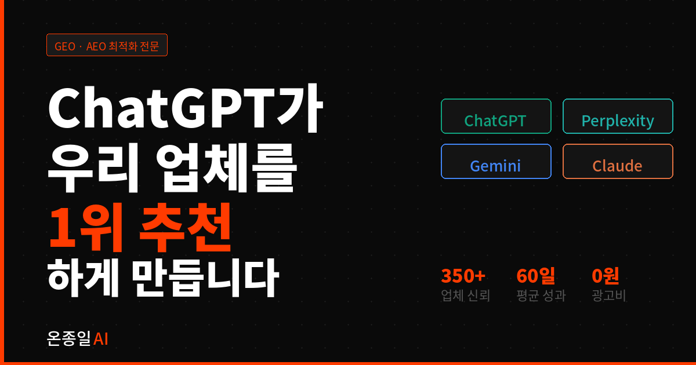

네이버 블로그는 이제 한계입니다.
AI 검색 시대, 온종일AI가 모든 업종의
ChatGPT · Perplexity · Gemini · Claude 노출을 설계합니다.
ChatGPT·Perplexity는 네이버를 크롤링하지 않습니다. 완전히 다른 채널입니다.
각 AI마다 크롤링 방식이 다릅니다. 온종일AI는 플랫폼별 최적화 전략을 따로 설계합니다.
온종일AI는 4개 AI가 읽고 인용하는 구조를 직접 설계합니다.
계약 후 매달 어떤 작업이 이루어지는지 투명하게 공개합니다.
같은 업체, 다른 형식. AI는 구조화된 Q&A 콘텐츠만 인용합니다. 왼쪽과 오른쪽의 차이가 AI 추천 여부를 결정합니다.
고객이 AI에게 추천을 물어볼 수 있는 업종이면 모두 적용됩니다.
광고비 없이 AI 자연 추천으로 만든 성과입니다.
가장 많이 받는 질문들을 모았습니다. 더 궁금한 점은 무료 상담으로 해결하세요.
모든 요금제에 AI 노출 현황 진단과 월간 리포트가 포함됩니다.
AI 검색 트렌드는 네이버 데이터랩에서 직접 확인할 수 있습니다.

무료로 AI 노출 현황을 진단해드립니다.
ChatGPT에서 직접 검색해드리고, 경쟁사 대비 현황을 알려드립니다.
경쟁사가 먼저 선점하기 전에 시작하세요.